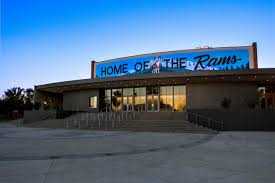
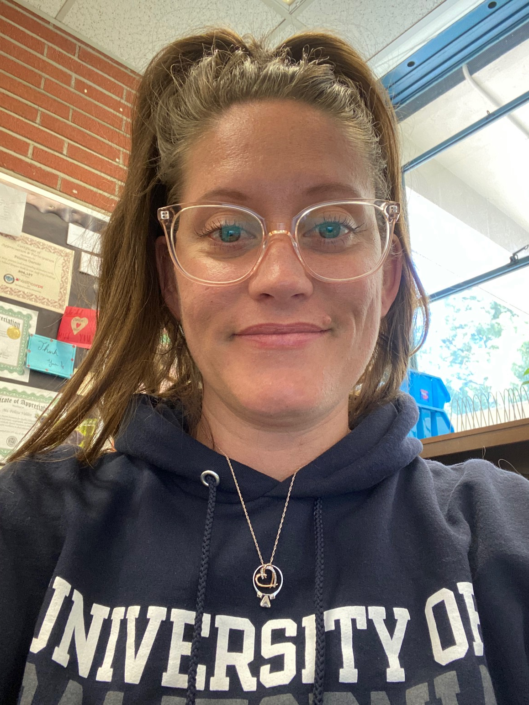
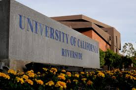
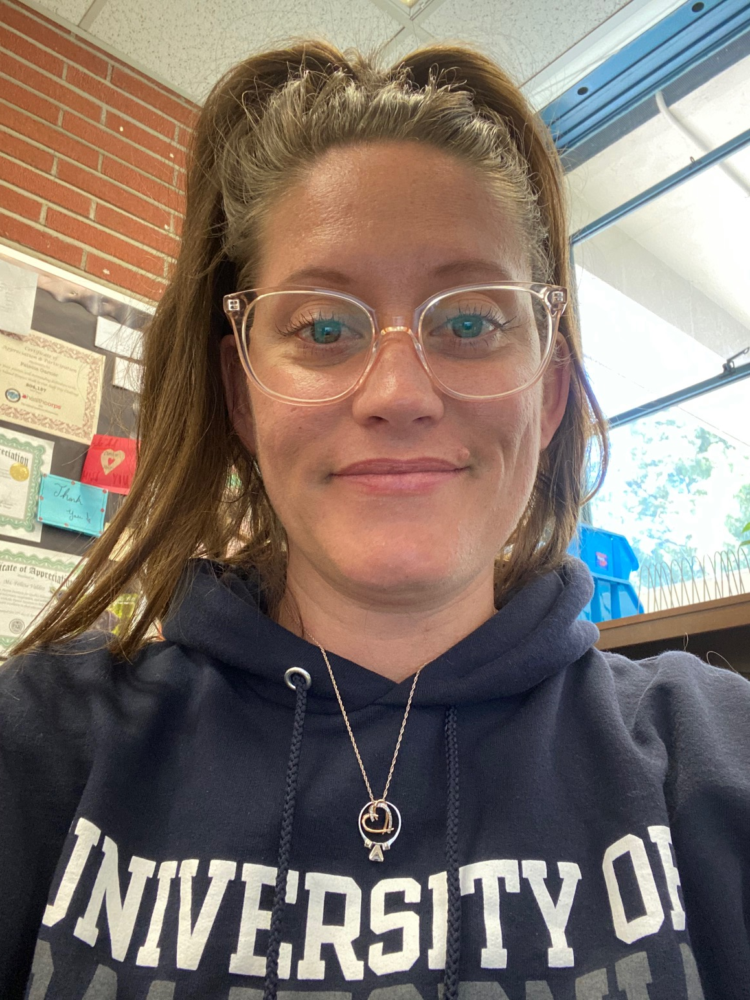
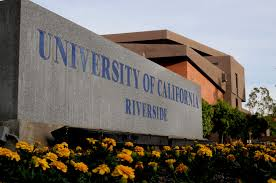

Felecia Garner
History major looking for a teaching position in middle or high school. I have worked at a high school in Riverside, Ca since 2011. My position requires me to keep students motivated and engaged in their education as a tool to allow them the opportunity to remain at their home school instead of leaving for an independent study program. In 2011, the scholl where I am employed had the lowest graduation rate in the Riverside Unified School District and the highest drop out rate for the senior class. As of 2019, Ramona High School has the highest graduation rate, the lowest drop out rate and RUSD has the highest graduation rate as a district in the top 16 largest school districts in the state of California. I am proud to say that I played a role in that change. I have learned to make connections and maintain a positive rapport with students which allows me to have great classroom mangaement. I am highly motivated and look forward to continue my own education as I support students with their own.
Experience
Alternative Education Learning Lab Assistant
• Credit Recovery Program
• Aid in both independent and small group settings
• Experience with CCSS, NGSS, Student rapport, and classroom management
Cheer Coach and Advisor
• Advised and coached competitive high school cheer teams
• Maintained safety protocols and aided in student success resulting in the team placing second in the nation
Restaurant Manager
• Ran efficient team in Food and Beverage at a high end restauranr
• In charge of food andbeverage costs
• Maintained employee schedules
•Employed multi-tasking skills in a high paced setting
Education
UC Riverside
University of California Riverside
Riverside City College
Portfolio





